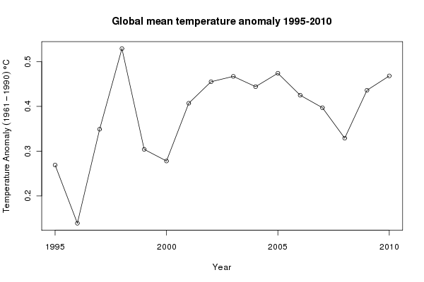
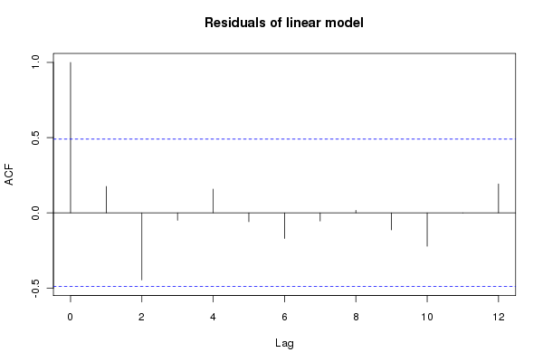
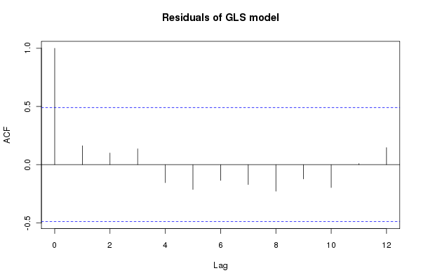
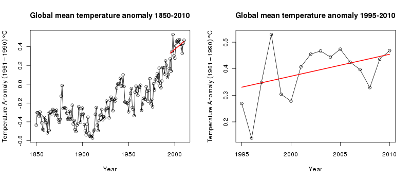

Global warming since 1995 ‘now significant’
Tagged
Blogroll
Yesterday (June 11, 2011) the BBC reported on comments by Prof. Phil Jones, of the Climatic Research Unit (CRU), University of East Anglia (UEA), that the warming experienced by the planet since 1995 was statistically significant. That the trend in the recent data was now significant when last year it was not, was attributed to the fact that one more data point (year) was now available for the analysis and Jones highlighted the utility of long-term monitoring data as more data is collected in detecting pattern in noisy data. In this post I wanted to take a closer look at these data and illustrate how we can use R to fit regression models to time series data.
I will look at the HadCRUT3v data set, using the global mean version of the data. I don’t know specifically that Jones was commenting on these particular data as I have been unable to identify a source for his comments other than the information in the BBC article, but it seems plausible that Jones was talking about these data. To load these data into R we use
URL <- url("http://www.cru.uea.ac.uk/cru/data/temperature/HadCRUT3v-gl.dat")
gtemp <- read.table(URL, fill = TRUE)The data need a little post processing to clean them up as the provided format also has, in every other row, the number of stations used to form each temperature data point. We won’t consider those data in this post, but as they provide information as to the likely uncertainty in each observation, we could use those data as case weights in the analysis. The data come as monthly means, with an annual mean column at the end. The data are anomalies from the 1961-1990 mean.
## Don't need the even rows --- perhaps do as case weights?
gtemp <- gtemp[-seq(2, nrow(gtemp), by = 2), ]
## set the Year as rownames
rownames(gtemp) <- gtemp[,1]
## Add colnames
colnames(gtemp) <- c("Year", month.abb, "Annual")
## Data for 2011 incomplete so work only with 1850-2010 data series
gtemp <- gtemp[-nrow(gtemp), ]The first step in any analysis should be to look at the data. Here we produce a simple time series plot of the annual mean temperature using base graphics commands
ylab <- expression(Temperature~Anomaly~(1961-1990)~degree*C)
plot(Annual ~ Year, data = gtemp, type = "o", ylab = ylab,
main = "Global mean temperature anomaly 1850-2010")to produce this figure:

The news report was about trends in temperature from 1995 onwards. We subset the data, selecting only the observations from 1995–2010 (and only variables Year and Annual) and plot those data
grecent <- subset(gtemp, subset = Year >= 1995,
select = c(Year, Annual))
## plot
plot(Annual ~ Year, data = grecent, type = "o", ylab = ylab,
main = "Global mean temperature anomaly 1995-2010")
In R, linear models fitted by least squares are fitted using the lm() function. In the code chunk below, I fit a linear trend to the 1995–2010 data (gm1) and a null model of no change (gm0), and compare the two models with a F-ratio test
## fit a linear model through these recent data
gm1 <- lm(Annual ~ Year, data = grecent)
gm0 <- lm(Annual ~ 1, data = grecent)
anova(gm0, gm1)
coef(gm1)The linear trend fits the data significantly better than the no-trend model. The rate of increase in temperatures over the period is ~0.01 (standard error = 0.005). As these are time series data and probably violate the independence assumption of the model, the standard error is potentially too small. As the data are regularly spaced in time, we can easily employ the autocorrelation function to investigate residuals correlations in the model errors. The acf() function can be used for that, which produces a plot of the correlogram
acf(resid(gm1), main = "Residuals of linear model")
Although within the approximate 95% confidence intervals, there are some large correlations in the residuals, especially at lag 2. This is something we must try to account for in our model and see how that affects the estimates of the model coefficients and ultimately the significance or otherwise of the fitted trend. Other model diagnostics can be produced via the plot() methods for "lm" objects
layout(matrix(1:4, ncol = 2))
plot(gm1)
layout(1)but given the small sample size there is not much to be worried about here, though note the observations with large residuals and their leverage, which could indicate an undue influence on the model parameters.
We can account for the autocorrelation in the data whilst estimating the linear trend by switching to fitting the model using generalized least squares (GLS) via the gls() function available in the nlme package. GLS allows a correlation structure for the model residuals to be estimated using a simple time series model such as an first-order auto-regressive process or AR(1). We need to decide what type of process to use for the correlation structure; the corellogram shown above suggests that AR terms, possibly up to order 2, might be appropriate. So we fit a series of models using gls() that refits the null and linear trend models from before (just so we are confident we are comparing like with like), plus models using AR(1) and AR(2) processes for the residuals
require(nlme)
gg0 <- gls(Annual ~ 1, data = grecent, method = "ML")
gg1 <- gls(Annual ~ Year, data = grecent, method = "ML")
gg2 <- gls(Annual ~ Year, data = grecent,
correlation = corARMA(form = ~ Year, p = 1), method = "ML")
gg3 <- gls(Annual ~ Year, data = grecent,
correlation = corARMA(form = ~ Year, p = 2), method = "ML")Correlation structures are specified using one of the "corStruct" classes; here I used the corARMA() function to fit an ARMA process, but will only use AR terms. If all you want to fit is an AR(1) process in the residuals, then corAR1(form ~ Year) can be used. All the models were fitted using maximum likelihood estimation. The anova() method can be used to compare the sequence of nested models. By nested, I mean that you can go from the most complex model (gg3) to the simplest model (gg0) by setting successive parameters to zero. The output from this process is shown below
> anova(gg0, gg1, gg2, gg3)
Model df AIC BIC logLik Test L.Ratio p-value
gg0 1 2 -25.10920 -23.56403 14.55460
gg1 2 3 -28.01874 -25.70097 17.00937 1 vs 2 4.909536 0.0267
gg2 3 4 -26.49875 -23.40839 17.24937 2 vs 3 0.480010 0.4884
gg3 4 5 -30.77369 -26.91075 20.38685 3 vs 4 6.274945 0.0122As we already saw, the linear trend model fits the data significantly (p-value = 0.0267) better than the null model of no trend. The model with the AR(1) process does not significantly improve the fit over the linear model, whilst the model with the AR(2) processes provides a significantly better fit than the linear model. A direct comparison between the linear trend model and the linear trend plus AR(2) model indicates the substantially better fit of the latter, despite requiring the estimation of two additional parameters
> anova(gg1, gg3)
Model df AIC BIC logLik Test L.Ratio p-value
gg1 1 3 -28.01874 -25.70097 17.00937
gg3 2 5 -30.77369 -26.91075 20.38685 1 vs 2 6.754954 0.0341The residuals from the best model (gg3) have much-reduced auto-correlations
acf(resid(gg3, type = "normalized"))
Note that we need to use the normalized residuals to get residuals that take account of the fitted correlation structure. We are now in a position to assess the significance of the fitted trend within this model and investigate the slope of trend, which we can do using the summary() method:
> summary(gg3)
Generalized least squares fit by maximum likelihood
Model: Annual ~ Year
Data: grecent
AIC BIC logLik
-30.77369 -26.91075 20.38685
Correlation Structure: ARMA(2,0)
Formula: ~Year
Parameter estimate(s):
Phi1 Phi2
0.2412298 -0.6527874
Coefficients:
Value Std.Error t-value p-value
(Intercept) -16.163962 6.232562 -2.593470 0.0212
Year 0.008268 0.003112 2.656464 0.0188
Correlation:
(Intr)
Year -1
Standardized residuals:
Min Q1 Med Q3 Max
-2.29284316 -0.68980863 0.03087847 0.51005562 1.99216289
Residual standard error: 0.08715603
Degrees of freedom: 16 total; 14 residualThe linear trend is still significant at the 95% level, although the estimated rate of change in temperature is a little lower then in the least squares model (0.008°C year-1; standard error = 0.003). The estimates of the AR(2) parameters are also shown (0.24 and -0.65). Approximate confidence intervals on the estimated parameters can be produced using the intervals() function:
> intervals(gg3)
Approximate 95% confidence intervals
Coefficients:
lower est. upper
(Intercept) -29.531478957 -16.163962275 -2.79644559
Year 0.001592535 0.008267935 0.01494333
attr(,"label")
[1] "Coefficients:"
Correlation structure:
lower est. upper
Phi1 -0.1675377 0.2412298 0.38958957
Phi2 -0.9036540 -0.6527874 -0.06838202
attr(,"label")
[1] "Correlation structure:"
Residual standard error:
lower est. upper
0.05109686 0.08715603 0.14866224At this point, it would be useful to visualise the fitted trend on the observed data. To do this, we need to predict values from the fitted model for the trend over the period of interest. The predict() method is used to derive predictions for new observations. First we build a data frame containing the values of Year we want to predict at (1995–2010), and then we add a yhat variable to the data frame, which contains the predicted values. The predicted values are obtained using predict(gg3, newdata = pred). The transform() function is used to add the yhat component to our data frame pred:
> pred <- data.frame(Year = 1995:2010)
> pred <- transform(pred, yhat = predict(gg3, newdata = pred))
> with(pred, yhat)
[1] 0.3305672 0.3388351 0.3471030 0.3553710 0.3636389 0.3719069 0.3801748
[8] 0.3884427 0.3967107 0.4049786 0.4132465 0.4215145 0.4297824 0.4380503
[15] 0.4463183 0.4545862
attr(,"label")
[1] "Predicted values"A final step, having produced the predicted values is to plot the trend on the original data series, which we do using the code below, first with the full data series and then with the 1995–2010 subset
layout(matrix(1:2, ncol = 2))
## plot full data
plot(Annual ~ Year, data = gtemp, type = "o", ylab = ylab,
main = "Global mean temperature anomaly 1850-2010")
lines(yhat ~ Year, data = pred, lwd = 2, col = "red")
## plot the 1995-2010 close-up
plot(Annual ~ Year, data = grecent, type = "o", ylab = ylab,
main = "Global mean temperature anomaly 1995-2010")
lines(yhat ~ Year, data = pred, lwd = 2, col = "red")
layout(1)to produce this figure

What does this tell us about underlying mean temperature of the recent few years? The linear trend doesn’t fit the data all that well; in fact, one could argue for a flat trend the latter half of the 1995–2010 period, and when viewed in the context of the data leading up to 1995, the fitted trend appears to substantially underestimate the increase in global mean temperature. A non-linear trend migth do a better job.
By focussing on only the very recent observational period, we have neglected to consider the constantly evolving mean temperature over the past 160 years. It has always seemed to me somewhat perverse that climatologists and climate sceptics alike ignored the decades of data before the recent period and then argued the toss about the sign and strength of a linear trend in the recent period, often claiming that there is insufficient data to ascribe a statistically significant pattern in defence of their particular point of view.
To me, it seems far more sensible to fit a model to the entire series of data, but to use a regression technique that can model local features of the series rather than the global trend over the entire data. That model could then be used to ask questions about whether temperatures have increased in a statistically significant manner for whatever period one liked. In a follow-up posting, I’ll demonstrate one such modelling technique that builds upon the concepts introduced here of using regression models with auto-correlation structures for the residuals.
Update 17 July 2011: In trying to keep the original posting simple, I overlooked one important aspect of the model fitting; to get the best estimates of the correlation parameters we should be using REML, not ML. This was raised in the comments, and I promised to take a look and update the post. This is important as it does change the output of the models, and if you are the sort of person who gets hung up on p-values that change will have you pulling your hair out or grinning like proverbial Chesire cat, depending on your point of view on climate change…
Load the data as per the original posting above and fit the trend and no trend models using GLS. For this we do need to fit with ML:
require(nlme)
gg0 <- gls(Annual ~ 1, data = grecent, method = "ML")
gg1 <- gls(Annual ~ Year, data = grecent, method = "ML")
anova(gg0, gg1)Now, update gg1 so the fitting is done via REML and fit models with AR(1) and AR(2) residuals (the method = "REML" bits are redundant as this is the default, but are included to make it clear that we want REML fitting):
gg1 <- update(gg1, method = "REML")
gg2 <- gls(Annual ~ Year, data = grecent,
correlation = corARMA(form = ~ Year, p = 1), method = "REML")
gg3 <- gls(Annual ~ Year, data = grecent,
correlation = corARMA(form = ~ Year, p = 2), method = "REML")A quick call or two to the anova() method suggests that the models with AR(1) or AR(2) residuals probably are not justified/required
> anova(gg1, gg2, gg3)
Model df AIC BIC logLik Test L.Ratio p-value
gg1 1 3 -13.29388 -11.37671 9.646942
gg2 2 4 -12.66126 -10.10503 10.330630 1 vs 2 1.367377 0.2423
gg3 3 5 -14.31948 -11.12419 12.159740 2 vs 3 3.658220 0.0558
> anova(gg1, gg3)
Model df AIC BIC logLik Test L.Ratio p-value
gg1 1 3 -13.29388 -11.37671 9.646942
gg3 2 5 -14.31948 -11.12419 12.159740 1 vs 2 5.025597 0.081If we were to stick with model gg1 then the trend is, marginally significant, with zero not included in a 95% confidence interval on the estimate slope of the fitted trend
> confint(gg1)
2.5 % 97.5 %
(Intercept) -40.521627038 -2.48493179
Year 0.001433605 0.02042816Part of the reason that the AR(1) model is no longer significant is that the estimate of the autocorrelation parameter is very uncertain; there is so little data with which to estimate this parameter any more precisely (output truncated):
> intervals(gg2, which = "var-cov")
Approximate 95% confidence intervals
Correlation structure:
lower est. upper
Phi -0.2923927 0.3280283 0.7541095
attr(,"label")
[1] "Correlation structure:"
....and given this uncertainty, we might wish to include the AR(1) to allow for autocorrelation in the residuals even if the estimate we get is not significantly different from zero. At which point you’d be looking at an insignificant trend estimate
> confint(gg2)
2.5 % 97.5 %
(Intercept) -48.116090814 3.46065310
Year -0.001535917 0.02422018This exercise just reinforces the futility of trying to identify significant trends, or lack thereof, with such a small sample of data. Using the full data set, an additive modelling approach and the use of derivatives suggests that temperatures were significantly increasing well after 2000. See this post for details.
Social